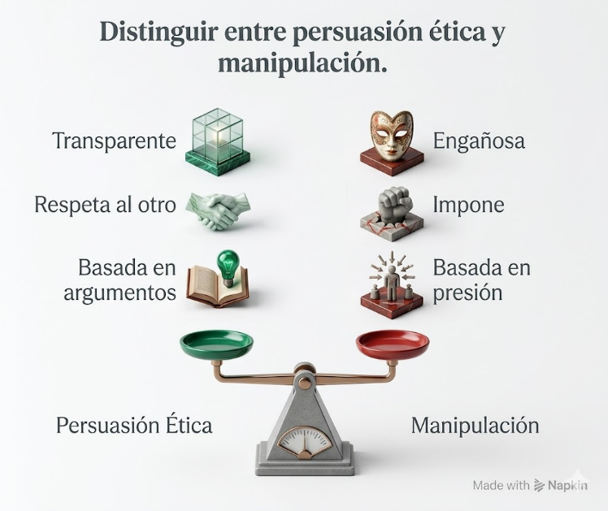
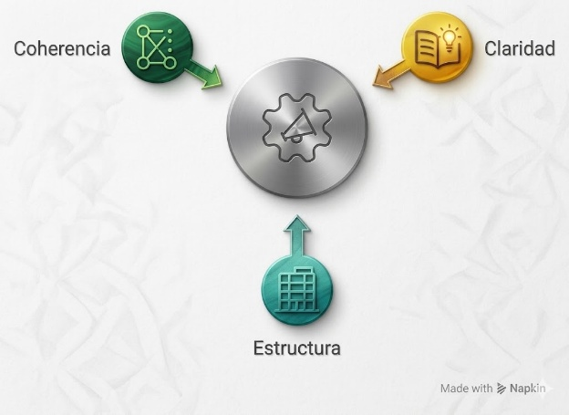
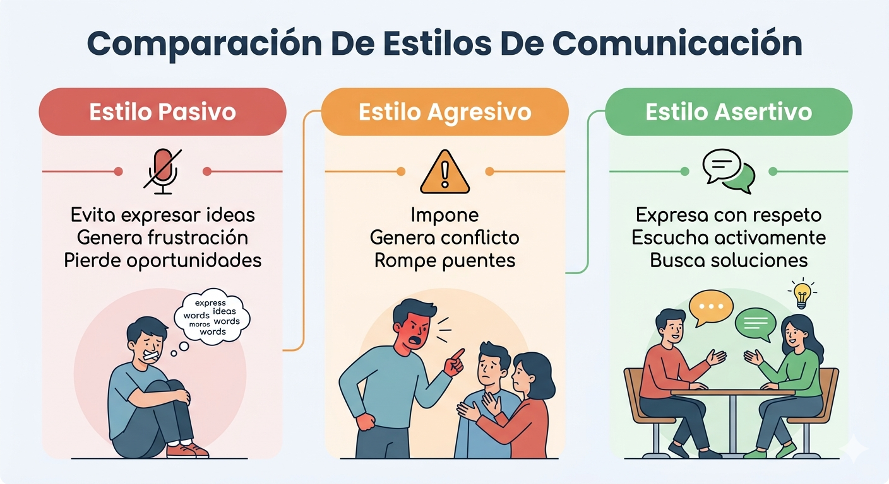
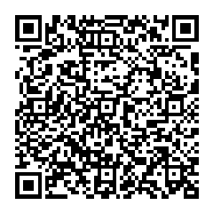
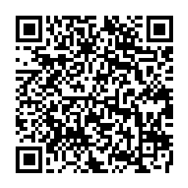
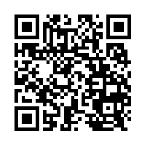

⚖️
Persuasión ética
Influir con argumentos, evidencia y respeto, sin recurrir a presión o engaño.
En los entornos académicos y profesionales, especialmente en el desarrollo de software, no basta con tener buenas ideas; también es fundamental saber sustentarlas, argumentarlas y comunicarlas de manera ética y respetuosa.
Como futuro tecnólogo, enfrentarás situaciones en las que deberás justificar decisiones técnicas, trabajar en equipo, resolver conflictos y convencer sin imponer.
⚖️
Influir con argumentos, evidencia y respeto, sin recurrir a presión o engaño.
💬
Expresar ideas, emociones y desacuerdos con claridad, firmeza y consideración por los demás.
🤝
Construir acuerdos, corregir errores y sostener conversaciones difíciles sin deteriorar la relación de equipo.
Recorre los módulos del tema 2. Aquí la guía se presenta en un formato visual con infografías, comparaciones, tarjetas de respaldo e interacciones breves para practicar persuasión ética y asertividad sin usar acordeones.
La persuasión ética es la capacidad de influir en las ideas o decisiones de otras personas mediante argumentos, sin recurrir a la manipulación. En entornos profesionales, persuadir éticamente fortalece la confianza y hace posible construir acuerdos sostenibles.
Desde la retórica clásica, Aristóteles describe tres pilares que siguen siendo útiles: credibilidad, conexión con la audiencia y razonamiento lógico. En conjunto, permiten defender una propuesta de manera convincente y responsable.

Selecciona el ejemplo que corresponde a persuasión ética.
Debes convencer al equipo de aplazar una entrega para corregir errores críticos detectados en pruebas.
Presentas evidencia, explicas impacto en usuario y propones una ruta de corrección con tiempos realistas.
Exageras consecuencias o responsabilizas al equipo para forzar aceptación inmediata.
Usa datos, ejemplos reales y casos prácticos para respaldar una propuesta.
Organiza las ideas para que el mensaje sea coherente, comprensible y fácil de seguir.
Considera el nivel de conocimiento, los intereses y el contexto de quien recibe el mensaje.
Las emociones ayudan a conectar, pero no deben utilizarse para engañar o presionar.

"Los reportes del sistema muestran que el formulario falla en tres navegadores distintos."
"Primero explico el problema, luego el impacto y finalmente la solución que propongo."
"Si hablo con usuarios no técnicos, evito términos complejos y uso ejemplos cotidianos."
"Reconozco la preocupación del equipo, pero sostengo la propuesta con argumentos verificables."
Haz clic en cada tarjeta para ver cómo aporta cada habilidad a una persuasión profesional y ética.
Haz clic en cada tarjeta para transformar un enfoque inadecuado en una respuesta profesional y ética.
La persona explica con claridad, escucha objeciones y reformula si nota que no fue comprendida.
Corrige con respeto, señala impacto y propone ajustes sin atacar el trabajo ajeno.
Orienta la conversación hacia acuerdos y hace visible por qué una decisión beneficia al equipo.
La comunicación asertiva es la capacidad de expresar ideas, opiniones y emociones de manera clara, directa y respetuosa. Permite defender derechos y necesidades sin afectar a los demás, algo esencial cuando se trabaja con equipos, revisiones de código o entrega de proyectos.
Referencia clave: según Manuel J. Smith, la asertividad permite defender derechos sin afectar a otras personas.
Un compañero entregó una función sin documentación y el equipo depende de ella.
No decir nada aunque el problema siga afectando el trabajo del equipo.
Usar amenazas, sarcasmo o frases que anulan la voz de la otra persona.
Hablar de forma ambigua, sin precisar problema, impacto ni petición.

Evita expresar ideas, cede por incomodidad y puede generar frustración acumulada.
Impone, descalifica o presiona; suele aumentar el conflicto y dañar la relación.
Expresa con respeto, escucha activamente y busca soluciones claras para ambas partes.
Pasivo
Agresivo
Asertivo
"No importa, yo corrijo luego aunque no alcance el tiempo."
"Siempre entregas tarde y por tu culpa el sprint se daña."
"La entrega llegó sin pruebas y eso afecta la integración. ¿Podemos revisarlas antes del cierre?"
Cambia la acusación por una expresión personal del problema: “Yo considero que podríamos mejorar la explicación”.
Implica atención, no interrumpir, validar ideas y entender las necesidades del otro.
Busca acuerdos, evita confrontaciones innecesarias y propone soluciones concretas.
Describe la situación sin descalificar ni exagerar.
Expresa cómo te sientes o cuál es el impacto desde tu perspectiva.
Formula una petición de aclaración, ajuste o solución compartida.
"Yo me siento preocupado cuando entregamos sin documentación, porque complica la integración. ¿Podemos revisarlo juntos?"
"Cuando ocurre..."
"Yo percibo / yo necesito / me preocupa porque..."
"Me gustaría que revisáramos..."
Lee cada situación y decide si comunica con ética, si entra en una zona dudosa o si cae en manipulación.
Presentas métricas de error, explicas el impacto en el usuario y propones una mejora sin desacreditar a nadie.
Exageras las consecuencias del problema para que el equipo acepte tu idea por miedo a quedar mal.
Usas una historia emotiva para convencer, pero dejas por fuera datos técnicos que podrían cambiar la decisión.
Adaptas tu lenguaje al público, aclaras ventajas y límites de la propuesta y permites preguntas antes de decidir.
Combina audiencia, propósito, evidencia y tono para redactar el arranque de una intervención profesional.
En cada escena, elige la respuesta que mejor combina claridad, respeto y propuesta de solución.
Un compañero sube cambios sin pruebas y eso bloquea la integración del sprint.
Durante una reunión, otra persona interrumpe constantemente tu explicación técnica.
El cliente solicita un ajuste grande para mañana, pero sabes que compromete calidad y tiempo.
Comprueba lo aprendido sobre persuasión ética y comunicación asertiva. Selecciona una respuesta por pregunta y luego finaliza la evaluación.
Para ampliar tu comprensión sobre persuasión ética y comunicación asertiva, explora los siguientes recursos:
Artículo divulgativo centrado en la persuasión ética y su aplicación profesional.
Ir al recurso
Material con apartados sobre persuasión, asertividad, emociones y convivencia.
Ir al recurso
Video breve para reforzar definición, ventajas y elementos clave de la comunicación asertiva.
Ir al recurso